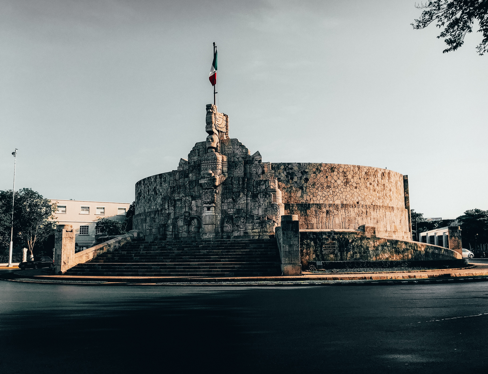
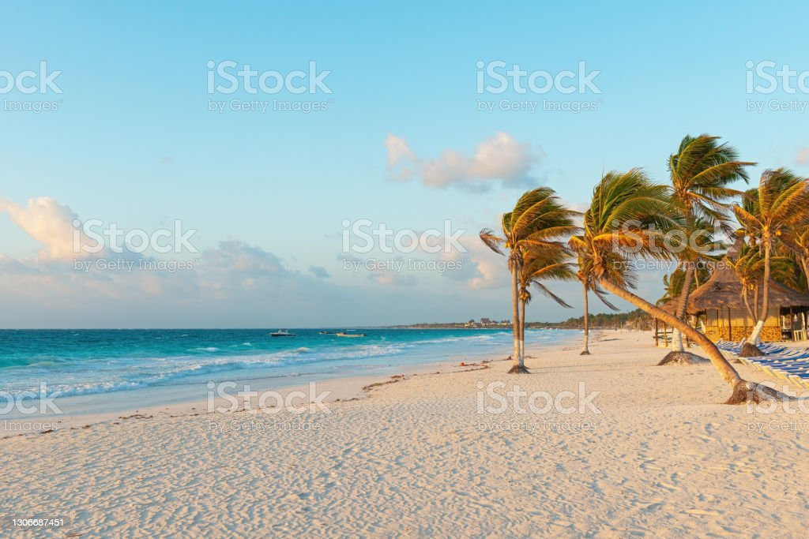

¿Qué ofrece Yucatán?

1Gastronomia
Yucatán es conocido por tener una de las gastronomias más destacables del país
2Monumentos
Alberga una gran cantidad de zonas arquelógicas para conocer y disfrutar de su pasado
3Cultura
La cultura maya fue considerada una de las grandes civilizaciones del continente americano
Galeria



Yucatán destaca por:

Días soleados

Personas agradables